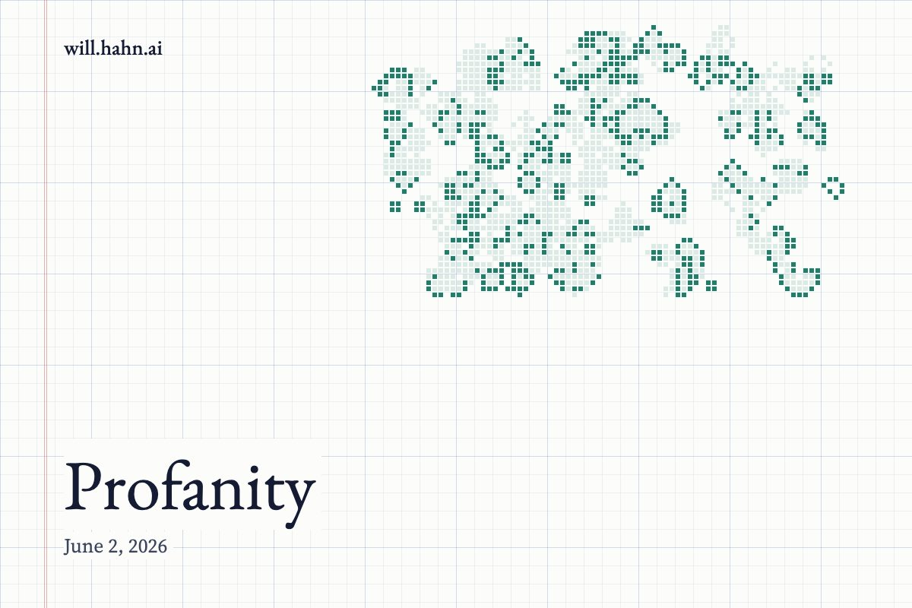

Profanity

The First Operating System
Before there were laws, there were fires.
Before there were courts, constitutions, universities, markets, or brands, there was the circle of human beings around the flame trying to understand what could be touched and what could not.
This was not superstition.
It was architecture.
The first great human distinction was not true and false. It was not useful and useless. It was not legal and illegal. It was sacred and profane.
Some things belonged inside the circle.
Some things belonged outside it.
Some words could be spoken casually. Some words could not be spoken at all. Some places could be walked through. Some places had to be entered slowly. Some objects could be traded, broken, discarded. Others had to be guarded, carried, buried, inherited.
This is the oldest human technology.
Not the spear. Not the wheel. Not fire.
The boundary.
The line between the sacred and the profane.
What Profanity Really Means
We think profanity means bad language.
A foul mouth. A rude joke. The wrong word at the dinner table. Something impolite in mixed company.
But that is the smallest possible version of the idea.
Profanity is not merely the use of forbidden words. Profanity is the failure to perceive that anything is forbidden. It is not disrespect in the ordinary sense. It is ignorance in the original sense: not knowing. Not seeing. Not being able to tell the difference between what should be handled and what should be held.
The profane person is not always vulgar.
Often they are very sophisticated.
They can explain everything. Reduce everything. Translate everything into economics, psychology, chemistry, politics, status, utility, incentives, or power. They look at a cathedral and see real estate. They look at a forest and see board feet. They look at a family and see reproductive strategy. They look at a nation and see an imagined community. They look at a human being and see a bundle of drives.
They are not wrong exactly.
That is the trap.
They are just using the wrong level of description.
A sacred stone is, in fact, a rock.
An ancient tale is, in fact, a story.
A city is, in fact, a list of rules and pipes and permits and roads.
A person is, in fact, a nervous system wrapped in a biography.
But if that is all you can see, you have not become more intelligent. You have become blind in a more elaborate way.
The Desecrating Mind
The modern mind has developed a peculiar talent.
It can dissolve anything.
Give it a ritual and it will call it performance. Give it a myth and it will call it narrative. Give it a moral inheritance and it will call it social construction. Give it a sacred place and it will call it a coordinate on a map.
This feels like liberation at first.
The spell is broken. The curtain is pulled back. The old authorities are exposed. The idols are smashed. The ancestors are corrected. The taboos are mocked. The holy places are paved over.
And for a while this produces energy.
There is a strange intoxication in desecration. It feels like intelligence because it breaks things open. It feels like courage because it offends. It feels like freedom because there are no more walls.
But a world with no sacred objects does not become a world of free people.
It becomes a world of available objects.
Everything can be bought. Everything can be sold. Everything can be rebranded, repackaged, optimized, flattened, monetized, and fed back into the machine.
When nothing is sacred, everything is inventory.
This is why the loss of the sacred does not produce emptiness.
It produces markets.
The Parasites Know
The human mind cannot live without worship.
This is not a religious claim. It is a systems claim.
Attention has to organize itself around something. Desire has to point somewhere. Time has to be ranked. Sacrifice has to be justified. A human being cannot move through the world without some hidden hierarchy of value telling them what matters more than what.
If you do not know what you worship, you do not become free of worship.
You become programmable.
The parasites understand this.
Marketing understands this. Politics understands this. Social media understands this. Ideology understands this. Status games understand this. Ancient patterns of domination understand this better than most modern intellectuals do.
A human being without a sacred center is not rational.
They are exposed.
They are a device with open ports. A city with no walls. A bloodstream with no immune system. A mind waiting to be colonized by whatever signal is loudest, most seductive, most repeated, most engineered.
The sacred is not merely what we love.
It is what protects us from loving the wrong things.
Made Up Does Not Mean Fake
The modern attack on the sacred usually takes one form.
It says: but that was made up.
The ritual was made up. The tradition was made up. The story was made up. The nation was made up. The self was made up. The meaning was made up.
Yes.
Of course it was.
So was the language inside your computer.
Try using the transistors without an interface.
Try walking directly into the machine code of reality with no operating system, no symbols, no stories, no inherited maps, no shared myths, no names for things, no boundaries around value.
You will not become enlightened.
You will become unusable.
Made up does not mean fake. Made up is how finite beings survive contact with reality. Made up is how the raw electrical storm becomes a screen, an icon, a folder, a message, a world.
A user interface is made up.
So is a constitution.
So is a marriage.
So is a university.
So is a funeral.
So is a childhood.
So is a name.
The question is not whether our sacred structures are constructed. The question is whether they are good constructions. Whether they hold. Whether they orient. Whether they protect something fragile and difficult and worth preserving.
A bridge is made up too.
Walk across it carefully.
The Long Polishing
How long do we think humans have been polishing this system?
How many generations had to discover, through blood and famine and betrayal and collapse, which boundaries mattered?
How many tribes had to vanish before the survivors learned what could not be mocked?
How many families had to break before the rules around kinship hardened into taboo?
How many cities had to burn before law became sacred?
How many tyrants had to rise before certain words became protected?
How many children had to be sacrificed to appetite before innocence became something to defend?
Civilization is not a set of opinions we happened to inherit.
It is a compression algorithm for suffering.
A vast, intergenerational intelligence system encoded in manners, stories, holidays, prohibitions, ceremonies, titles, gestures, and silences.
Not all of it is wise. Not all of it should survive. Some sacred things become idols. Some taboos become cages. Some traditions preserve poison. The distinction between sacred and profane is not an excuse to freeze history.
But neither is the existence of bad code an argument against software.
The fact that a system needs debugging does not mean the machine should be smashed.
The Binary That Builds the World
The sacred and the profane are not decorative concepts.
They are not antique furniture in the mansion of civilization.
They are closer to zero and one.
The primal binary.
The machine code of meaning.
This can be touched. That cannot.
This can be joked about. That must be approached with care.
This can be bought. That must never have a price.
This can change. That must endure.
This is ordinary. That is set apart.
Out of this binary, whole worlds are built.
A courtroom works because certain words, roles, and rituals are treated as more than theater. A university works because truth is treated as more than preference. A family works because the child is treated as more than a small consumer. A nation works because its symbols are treated as more than fabric and ink. A human life works because the self is treated as more than an accidental bundle of impulses.
Remove the distinction and the structures do not instantly disappear.
They become hollow.
The rituals continue, but no one knows why. The words are repeated, but no one believes them. The institutions stand, but they no longer carry voltage.
Then we act surprised when everything feels fake.
The Return of Profanity
The crisis of our age is not that people swear too much.
It is that people profane too easily.
They cannot feel the boundary. They cannot sense the voltage. They cannot tell when they are standing on holy ground because they no longer believe there is any such thing as ground that should change the way you walk.
So they mock what they should study.
They monetize what they should guard.
They discard what they should repair.
They expose what they should protect.
They reduce what they should revere.
And then, when the world becomes thin and ugly and transactional, they wonder why meaning has disappeared.
But meaning did not disappear.
It was desecrated.
Piece by piece.
Joke by joke.
Sale by sale.
Reduction by reduction.
Learning to See Again
The answer is not to become primitive.
It is not to believe every old story, obey every inherited rule, or put velvet ropes around the past.
The answer is to recover the sense organ.
To relearn the perception of sacredness.
To ask not only, “Is this real?” but “What does this make possible?”
Not only, “Was this constructed?” but “What does this construction protect?”
Not only, “Can I explain this?” but “What am I destroying by explaining it badly?”
The sacred is not the opposite of intelligence.
It is intelligence operating at civilizational depth.
It is what tells a finite mind that some things must be approached slowly. Some systems cannot be understood by tearing them apart. Some inheritances contain more computation than the individual brain can hold. Some stories are load-bearing. Some boundaries are not oppression but structure. Some forms of reverence are not weakness but precision.
A culture that cannot distinguish sacred from profane cannot defend itself.
A person who cannot distinguish sacred from profane cannot know what they are.
The Fire Is Still There
We are still around the campfire.
The fire has changed form. It glows now in screens, in server farms, in cities seen from orbit, in the electric mesh of a species trying to become something more than frightened animals with tools.
But the old question has not changed.
What belongs inside the circle?
What must be kept outside it?
What do we touch casually, and what do we approach with clean hands?
The future will not belong to the people who mock every boundary. It will not belong to the people who worship every boundary either. It will belong to those who can recover the ancient intelligence beneath the distinction.
The sacred and the profane.
Zero and one.
The binary that builds the machine.
The first interface between the human mind and the unbearable brightness of reality.
And perhaps the task now is not to invent meaning from nothing, but to notice that we have been standing inside an ancient operating system all along, surrounded by symbols still humming with power, waiting for us to stop laughing long enough to learn how to use them again.
New essays also go out by email. Subscribe on Substack.